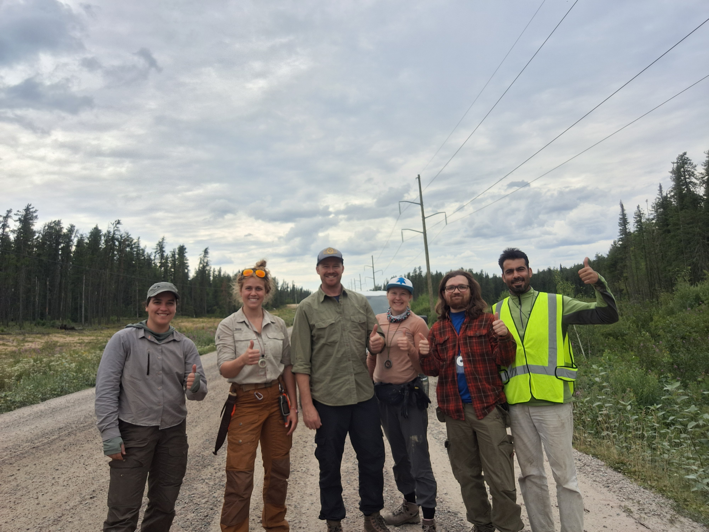
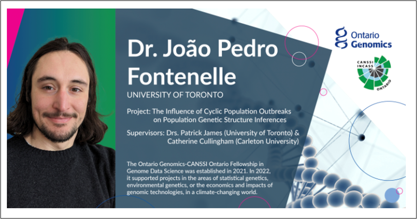
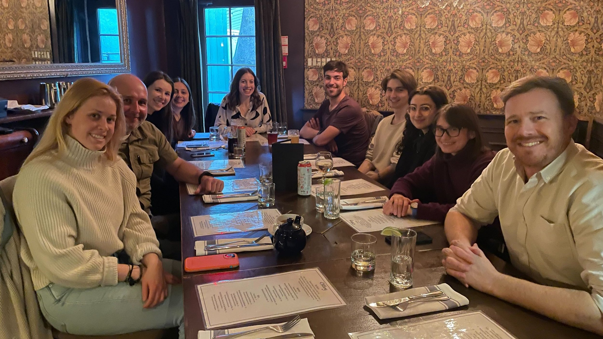
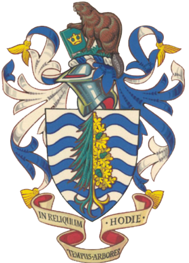

News from the James Lab
-
Jessica continues in the lab as a master’s student studying population genetics of cyclic outbreaking spruce budworm.
September 2024 -
Sophia continues in the lab as a master’s student exploring the spatiotemporal eco-genomic and demographic data of the spruce budworm across eastern Canada.
September 2024 -
Léo received an OGS scholarship to fund his second year as a MScF student.
September 2024 -
Morgane and others publish in Forest Ecology and Management!
August 2024 -
JP taught the course "Intro to Population Genomics for Ecology and Evolution" at "Museu Paraense Emilio Goeldi" in Belém do Pará/PA, Brazil.
August 2024 -
A field team composed of Kennedy, Zack, Léo, Emily, and undergraduates Yasmin Radisch and Dianel Lowe traveled across northern Ontario to study the impact of the eastern spruce budworm and jack pine budworm on forest structure and fuels.

July 2024 -
Patrick, Kate, and Jessica embark on fieldwork, sampling spruce budworm in Quebec.
July 2024 -
Kate, JP, Sophia, and Jessica attend the 3rd Joint Congress on Evolutionary Biology. Kate presented her poster: “Leveraging citizen science to answer questions of population genetic inference in cyclic populations.” JP presented the talk: “Variability in the sensitivity of outlier detection methods in outbreaking systems: a spruce budworm case study” and the poster: “How do population cycle outbreaks affect population genetic inferences?” Sophia presented her poster: “Assigning phenologically asynchronous moths to source populations using individual genotypes.” Jessica presented her poster: “Genetic consequences of outbreaks in forest Lepidoptera: temporal variation in effective population size (Ne).”
July 2024 -
Sophia joins the lab as an undergraduate.
May 2024 -
JP presents a poster at the 2024 CANSSI Research Day: Fontenelle, J. P., Cullingham, C., & James, P. (2024). How do population outbreak cycles affect population genetic inferences?
May 2024 -
JP and Morgane attend the Annual Conference for the Canadian Society for Ecology & Evolution in Vancouver, British Columbia. JP presents his work collaborating with Dr. Catherine Cullingham at Carleton University: “Demographic and genetic variation in population outbreak cycles: influences on genetic inferences and their consequences.” Morgane presents her talk: “The values of zeros: detecting Allee effect in low-density population time series.”
May 2024 -
Kennedy and Nick attend the Fuels and Fire Behaviour conference in Boise, Idaho. Kennedy presents her work on measuring spruce budworm-altered fuels through time using terrestrial LiDAR.
April 2024 -
Kennedy completed her Qualifying Exam and is now a PhD Candidate. Congrats Kennedy!
April 2024 -
JP gives a talk: “Developing a Model Tool to Simulate Population Dynamics of Forest Outbreaking Pests to Support Conservations and Management Initiatives” at the 2024 Ontario Genomics Snack and Learn to stakeholders about his Ontario Genomics CANSSI Ontario fellowship.
March 2024 -
Kate Brittain joins the lab as a postdoctoral fellow investigating spatial and temporal population dynamics to manage outbreaking insect species.
February 2024 -
Kennedy presents her work on initial attack success in Ontario at the CIFFC Students of Fire National Conversation.
February 2024 -
Patrick and Simon publish in Environmental Entomology!
November 2023 -
Kennedy presents her work at the Forest Health Review in Orillia, Ontario, on the interaction between spruce budworm and wildfire.
October 2023 -
JP’s preprint “Comparing Approaches to Specimen Identification using Neotropical Freshwater Fishes in the Barra del Colorado Wildlife Refuge, Costa Rica.” is available on bioRxiv
October 2023 -
Léo started a MScF in the lab. His first year is funded by an NSERC CGS-M scholarship.
September 2023 -
Nick Dewez joins the lab as a PhD student. His PhD work is focused on modelling wildfire and defoliator interactions in Canada’s eastern boreal forests under climate change.
September 2023 -
JP publishes in the North American Journal of Fisheries Management!
August 2023 -
Patrick, JP, Franck, Morgane, Clara, and Nick attend the Spruce Budworm Science and Management workshop in Montreal, Quebec. JP presented the talk: “Outbreaks and genetic stability: Temporal variation of genetic structure and diversity under cyclic irruptive population dynamics.”
July 2023 -
Jessica’s summer work in the James lab is supported by an NSERC UGRA.
June 2023 -
Léo was awarded a University of Toronto Excellence Award to fund his undergraduate research for the summer of 2023.
May 2023 -
Kennedy and Léo attended a one-week workshop called “Airborne Lidar Theory, Data Processing, Modelling and Biomass Applications” at the University of Lethbridge, organized by the ARTeMiS lab. They received financial support from Canada Wildfire.
May 2023 -
JP was awarded a Postdoctoral Fellowship in Genome Data Science from Ontario Genomics and CANSSI Ontario (OG-CO)!JP will lead a project to investigate the implications of cyclic population demo-genetic dynamics in genetic variation over time using individual-based simulation models, coalescent analyses and empirical datasets. This study is a collaborative study with the Cullingham lab at Carleton University.

April 2023 -
Clara, Jack and Niamh attend IALE-NA in Riverside, California!
March 2023 -
We say goodbye and good luck to Sophie, as she leaves us for her job as an Assistant Professor at Simon Frasier University! All the best!

March 2023 -
New paper on outbreaks!
February 2023 -
JP's article on the biogeography of the Neotropical freshwater stingrays has been recognized as a Top Cited Article in Journal of Biogeography for the 2021-2022 period!
February 2023 -
Clara attends the SERG-International conference in Victoria, BC!
February 2023 -
Doriana was awarded a Master’s NSERC! Congratulations Doriana!!
January 2023 -
Sophie, Doriana, Kennedy, Léo and Jack represented our lab group at the Wildland Fire Conference in Edmonton.
November 2022 -
Clara Presented at the CANSSI Ontario Statistical Software Conference
November 2022 -
Jonas and Patrick publish in Remote Sensing of Environment
October 2022 -
Doriana was awarded Ontario Graduate Scholarship, congratulations Doriana!!!
September 2022 -
The lab welcomes two new undergraduate students Jacob Klimczak and Cameron Gibson. Jacob and Cameron are joining the lab to study the effect of jack pine budworm on forest structure in Northern Ontario using the data collected during the last field season.
September 2022 -
JP, Jack, Clara, Morgane and Patrick attend ESA in Montreal!
August 2022 -
Patrick publishes a review of insect-fires interactions in Current Forestry Reports
August 2022 -
JP becomes a Dad! Welcome baby Senan
July 2022 -
A field team composed of Paul, Kennedy, Franck, Léo as well as two volunteer students from the École d’Ingénieurs de PURPAN, Enzo Recchia and Hermine Septier characterized the impact of two outbreaking species of insects, the eastern spruce budworm and the jack pine budworm on forest structure and forest fuels across northern Ontario.
July 2022 -
JP and Niamh attend the workshop "Conservation Genomics"
June 2022 -
Clara, Kennedy, Jack, Sophie and Franck present at NAFEW
June 2022 -
Patrick, Sophie, Doriana and Franck travelled to jasper to participate in a mountain beetle workshop in Jasper with Laura Chasmer’s team where they discussed the impact of Mountain pine Beetle on Wildfire risk in Alberta with a focus on Jasper’s National Park. Where Franck and Doriana presented some of their research.
June 2022 -
Jack was awarded 3rd place in the student presentation competition for his talk on the relationship between moisture availability and burn severity at NAFEW 2022
June 2022 -
Jack publishes in Forests.
May 2022 -
Sophie accepts Assistant Professor Position in Applied Terrestrial Ecology in the School of Resource and Environmental Management in the Faculty of the Environment at Simon Fraser University – CONGRATS SOPHIE!
May 2022 -
Léo receives an NSERC USRA to use LiDAR to model how forest fuels change through time following an insect outbreak. Congrats Léo!
May 2022 -
JP publishes in Integrative and Comparative Biology
May 2022 -
JP publishes in Zoologica Scripta
May 2022 -
JP is invited to the San Francisco Aquarium Society and the Sacramento Aquarium Society
May 2022 -
Patrick publishes in Frontiers in Forests and Global Change
May 2022 -
Sophie joins the podcast For Peat’s Sake to talk about peatland fires!
May 2022 -
In addition to helping devise a method to analyze point clouds collected from forests using a Terrestrial LiDAR scanner, Léo is helping prepare for the upcoming field season in Timmins, North Bay, and Northwestern Ontario.
April 2022 -
Niamh passes her Qualifying Exam!
March 2022 -
Paul Piascik joins the lab as a technician! Paul has been helping the team plan and will be joining Franck, Kennedy, and Léo in the upcoming field season.
February 2022 -
Clara and Patrick publish in Earth and Space Science
January 2022 -
Jonas publishes in Urban Ecosystems
January 2022 -
Léo Jourdan joins the lab as an undergraduate researcher. Léo is helping devise a method to analyze point clouds collected from forests using a Terrestrial LiDAR Scanner. Welcome Léo!
January 2022 -
Julian is published in Biodiversity and Conservation!
January 2022 -
Mathieu and Patrick publish in the Journal of Biogeography!
January 2022 -
Jack publishes in Ecological Monographs!
January 2022 -
Kennedy passes her PhD transfer exam and is officially a PhD student. Congrats Kennedy!
December 2021 -
Mathieu Landry successfully defends his PhD thesis at UQAM. Bravo Mathieu!
December 2021 -
Read all about Jonas’s work using thermal imaging to assess forest health, profiled here.
December 2021 -
Clara is awarded the SERG-I Graduate Student Award for attendance to a (now 2023) meeting!
December 2021 -
Jeremy, Julian, and Patrick publish in Landscape Ecology!
December 2021 -
First NSERC Fire Network meeting - a PDF of the James Lab slides can be found here.
November 2021 -
Julian publishes in HYSTRIX, the Italian Journal of Mammalogy!
October 2021 -
Niamh is awarded the Ontario Graduate Scholarship!
October 2021 -
Patrick publishes in Landscape Ecology!
October 2021 -
Read Patrick’s contribution to the Ontario Professional Forest Association Newsletter (p. 16) about spruce budworm and wildfire interaction in the boreal forest.
October 2021 -
Doriana goes from undergraduate assistant to MScF student, studying the effects of mountain pine beetle outbreaks on wildlife severity in BC and Alberta. Her thesis work is supported by a grant from fRi Research.
September 2021 -
Simon, Julian, and Patrick publish in Molecular Ecology!
September 2021 -
The intrepid team of Jared, Franck, and Kendriah successfully complete and challenging first field season collecting fuels data in post-JPBW stands. Bravo!
August 2021 -
JP’s paper in the Biological Journal of the Linnean Society is published!
July 2021 -
JP’s paper in Global and Planetary Change is published!
July 2021 -
JP presents his talk "Evolution and Diversity of the Neotropical Freshwater Stingrays: a Genomic Perspective" at the 2021 Joint Meeting of Ichthyology and Herpelotology, hosted as a hybrid meeting in Phoenix, USA.
July 2021 -
Clara is awarded the Queen Elizabeth II Graduate Scholarship in Science and Technology!
July 2021 -
Patrick publishes in Current Forestry Reports!
June 2021 -
JP is invited to the symposium “Phenotype still matters in the genomic era” and the II SBE Meeting. See his talk "Polymorphic, cryptic or hybridizing species? The importance of phenotype in interpreting molecular patterns in a fast-evolving, taxonomically complicated group of Neotropical stingrays.""
June 2021 -
JP is featured as an Early Career Researcher in the Journal of Biogeography!
June 2021 -
Doriana has been awarded an NSERC UGRA to work on fire-mountain pine beetle interactions. Congrats Doriana!
May 2021 -
Clara attends the virtual 2021-IALE North American Annual Meeting.
April 2021 -
Patrick presents at the Fire in MN Ecosystem Symposium! Watch a recording of his presentation here.
April 2021 -
JP’s paper in Biogeography is featured on The New Scientist – read it here. Congrats JP!
April 2021 -
Patrick is involved in a new paper on insect-fire interactions - read it here.
April 2021 -
JP’s paper in the Journal of Biogeography is published. Congrats JP!
March 2021 -
Jack’s paper in Current Zoology is published. Congrats Jack!
March 2021 -
Franck successfully defends his PhD on February 19th. Congratulations Franck!
February 2021 -
Morgane Henry joins the lab as a PhD student, co-supervised by Brian Leung at McGill University. Welcome Morgane!
January 2021 -
Julia presents her MFC capstone project: The Spatial Genetic Structure of a Spruce Budworm Outbreak. Congrats Julia!
December 2020 -
JP is invited to give an online lecture on the use of molecular data for phylogeography, biogeography, and diversity at Universidade do Estadual Paulista (UNESP), Brazil.
December 2020 -
João Pedro Fontenelle joins the lab as a PDF after defending his PhD in September. Welcome JP!
November 2020 -
The James Lab gets much bigger: Doriana Romualdi joins the lab as an undergraduate researcher, Kennedy Korkola joins the lab as an MScF student, Clara Risk, Jack Goldman, and Jared Haney join the lab as PhD students and Franck Gandiaga joins the lab as a Post Doctoral Fellow.
September 2020 -
Jonas Hamberg joins the lab as a PDF. Welcome Jonas!
June 2020 -
Niamh and Julian attend the (virtual) 2020-IALE North American Annual Meeting.
April 2020 -
Julia Fang begins an internship in the lab as a Masters in Forest Conservation student. Her research will focus on looking at the genetic structure of a spruce budworm outbreak.
April 2020 -
Niamh Wall joins the lab as a PhD student, co-supervised by Marie-Josée Fortin (EEB).
September 2019 -
As of July 1 2019, the James lab has officially moved to the Graduate Department of Forestry, in the Daniels Faculty of Architecture, Landscape, and Design at the University of Toronto. Looking forward to new projects, challenges, and collaborations around forestry and forest conservation!

July 2019
No matching items